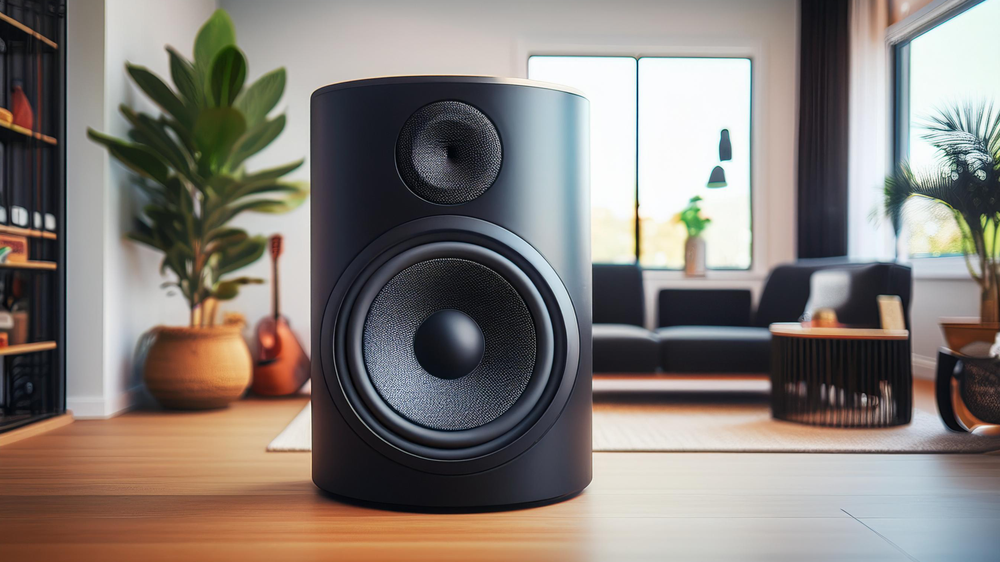

Addins that come with the Smart Home
Addins that come with the Smart Home
Below are the listed addins in the rooms of the Smart Home.
Addins in the Study Room
Fireplace
In the smart home, a fireplace often combines sleek, modern design with advanced technology. It features a clean, minimalist look with a glass front and is controlled via a smartphone app or voice commands. You’re able to adjust the flame intensity, heat levels, and set schedules, while it integrates with other smart devices like thermostats for optimal comfort. Some models even offer customizable flame colors and patterns, making it a stylish and efficient centerpiece of modern living.
Poetry Reader

In the smart home, a poetry reader is an advanced device that combines convenience with a love for literature. It typically features a sleek, modern design with a high-resolution screen and built-in speakers. You can use voice commands or a smartphone app to select the poems that you desire, adjust the reading speed, and even choose different narrators or accents. The reader might also have integration with smart lighting, dimming the lights to create a cozy atmosphere as it reads aloud. Additionally, it could offer personalized recommendations based on your poetry preferences and sync with other smart devices to enhance your literary experience overall.
Music

In the smart home, music is seamlessly integrated with high-quality speakers in each room, controlled via voice commands or apps. You can play different songs in each room or sync music throughout the home. Features include adaptive sound, personalized recommendations, and synchronized lighting that matches the music, creating a dynamic and immersive experience.
Chairs

In the smart home, the chairs often combine comfort with advanced features. They might have built-in sensors to adjust reclining angles, lumbar support, and heating or cooling functions based on your preferences. Many are equipped with smart controls, allowing adjustments via a smartphone app or voice commands. Some chairs even include integrated speakers or connectivity for playing music and have memory settings to recall your favorite positions. With sleek designs and technology integration, they offer both luxury and functionality to the home.
Addins in the Nursery Room
Glass Walls

In the smart home, the nursery has glass walls that use adjustable smart-tinting glass for privacy and transparency. It includes smart lighting, temperature control, and a monitoring system for the baby. Furniture may feature automated functions, like rocking. The room is designed for both elegance and advanced functionality.
Media

In the smart home nursery, however, it has media integration that enhances the environment with visuals, sounds, and scents. A high-quality, wall-mounted screen or smart projector plays calming videos or educational content, controlled via voice commands or an app. Built-in speakers deliver soothing lullabies or ambient sounds. Smart diffusers release gentle, calming scents like lavender or chamomile, creating a multisensory experience that soothes and engages the baby.